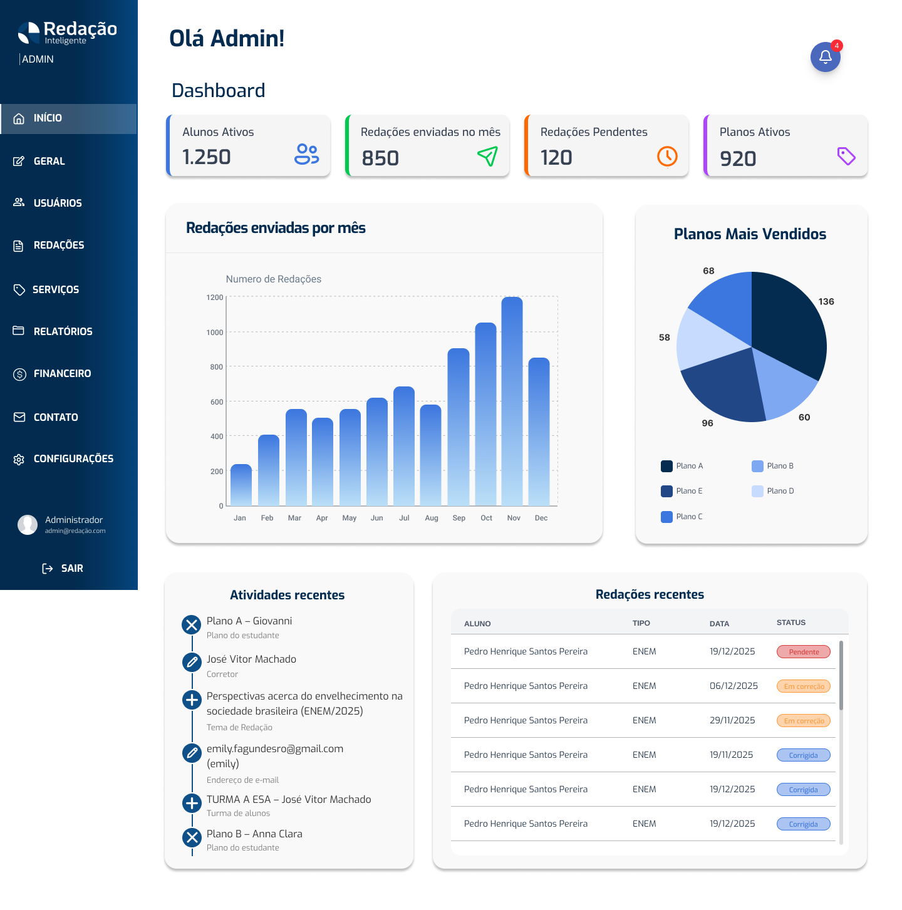

Produto · Engenharia · UX/UI
Três projetos,
decisões reais.
Estudos de caso objetivos sobre problema, papel, processo, restrições e resultados — sem transformar o portfólio em uma parede de texto.
Product · Engineering · UX/UI
Three projects,
real decisions.
Focused case studies covering the problem, role, process, constraints, and results—without turning the portfolio into a wall of text.
01 · SaaS em produção
Só+1
Papel: desenvolvimento full-stack, do front-end React à API Node.js.
Problema e contexto
Uma operação esportiva com três perspectivas
Jogadores, administradores e proprietários precisam coordenar partidas, presença, planos, cobranças, estoque e comunicação em um único produto.
Processo e decisões
Fluxos separados, linguagem compartilhada
- Áreas específicas para Player, Admin e Owner.
- Páginas carregadas sob demanda para conter o custo de uma aplicação crescente.
- Notificações em tempo real via SSE e contratos alinhados entre web e API.
Restrições e colaboração
Evoluir sem interromper o produto
O trabalho exige compatibilidade entre front-end, API, banco PostgreSQL, pagamentos e requisitos de LGPD, com revisão por pull request e testes antes da entrega.
Impacto verificável
Contribuição dos dois lados da stack
As entregas incluem áreas de usuário, dashboards, estoque, equipamentos, planos, presença, day use, faixas de preço e orçamentos de quadra.
- 3perfis principais de uso
- 44rotas na aplicação web
01 · Live SaaS
Só+1
Role: full-stack development, from the React front-end to the Node.js API.
Problem and context
One sports operation, three perspectives
Players, administrators, and owners need to coordinate matches, attendance, plans, payments, inventory, and communication in one product.
Process and decisions
Separate workflows, shared language
- Dedicated Player, Admin, and Owner areas.
- Lazy-loaded pages to control the cost of a growing application.
- Real-time SSE notifications and coordinated web/API contracts.
Constraints and collaboration
Evolving without disrupting the product
The work spans front-end, API, PostgreSQL, payments, and GDPR/LGPD requirements, with pull-request review and testing before delivery.
Verified impact
Contributing across the stack
Deliveries include user areas, dashboards, inventory, equipment, plans, attendance, day use, price bands, and court quotes.
- 3core user roles
- 44routes in the web app
02 · IA por voz
Alexa AI Bridge
Papel: criação e implementação completa da integração serverless.
Problema e contexto
Levar respostas atuais para uma interface sem tela
A Alexa precisava encaminhar perguntas abertas à OpenAI, pesquisar informações atuais e devolver uma resposta curta o suficiente para ser compreendida por voz.
Processo e decisões
Contexto de sessão, não histórico permanente
- Responses API com pesquisa web obrigatória.
previous_response_idmantém a conversa apenas na sessão.- Nomes de fontes são adaptados para fala natural.
Restrições e colaboração
Latência é parte da experiência
O fluxo opera em AWS Lambda com prazo total de 7,2 segundos, tentativas automáticas desativadas e erros classificados para diagnóstico sem expor detalhes técnicos ao usuário.
Resultado verificável
Fluxo coberto por testes automatizados
Casos de resposta, contexto, pesquisa web, timeout e falhas foram testados no ambiente do repositório.
- 15testes automatizados aprovados*
- 7,2sprazo total definido
- 1 sessãolimite deliberado do contexto
*Pytest executado localmente em 15/09/2026: 15 testes aprovados.
02 · Voice AI
Alexa AI Bridge
Role: end-to-end creation and implementation of the serverless integration.
Problem and context
Current answers through a screenless interface
Alexa needed to forward open-ended questions to OpenAI, research current information, and return an answer concise enough to understand by voice.
Process and decisions
Session context, not permanent history
- Responses API with mandatory web search.
previous_response_idpreserves context only within the session.- Source names are adapted for natural speech.
Constraints and collaboration
Latency is part of the experience
The flow runs on AWS Lambda with a 7.2-second total deadline, automatic retries disabled, and classified errors for diagnosis without exposing technical details to the user.
Verified result
Automated coverage of the core flow
Responses, context, web research, timeouts, and failure paths were tested in the repository environment.
- 15automated tests passing*
- 7.2stotal deadline
- 1 sessiondeliberate context boundary
*Pytest run locally on September 15, 2026: 15 tests passed.
03 · UX/UI · EdTech
Redação Inteligente
Papel: UX/UI Designer e Coordenador de Design, responsável pelo redesign e handoff.

Problema e contexto
Organizar uma jornada com vários atores
A plataforma conecta alunos que enviam redações, corretores e a operação administrativa. O redesign precisava tornar envio, acompanhamento, correção e gestão mais coerentes entre si.
Processo e decisões
Fluxos por responsabilidade
- Mapeamento de áreas de aluno, corretor e administrador.
- Hierarquia visual para tarefas, status e ações prioritárias.
- Componentes e estados preparados no Figma para handoff.
Restrições e colaboração
Design pronto para ser implementado
Como coordenador, alinhei consistência entre telas e organizei a entrega para desenvolvimento. O site público foi usado aqui apenas para contextualizar o produto atual.
Resultado verificável
Protótipo navegável e cobertura das áreas centrais
O arquivo de design registra os fluxos principais e um dashboard administrativo estruturado. Não atribuo métricas de negócio sem acesso a uma fonte verificável.
Limite da evidência: a imagem é do protótipo no Figma. Os valores do dashboard não representam resultados reais de usuários, receita ou conversão.
03 · UX/UI · EdTech
Redação Inteligente
Role: UX/UI Designer and Design Coordinator, responsible for the redesign and handoff.
Problem and context
Organizing a journey with multiple actors
The platform connects students submitting essays, reviewers, and administrative operations. The redesign had to make submission, tracking, review, and management coherent across roles.
Process and decisions
Workflows shaped by responsibility
- Mapped student, reviewer, and administrator areas.
- Created visual hierarchy for tasks, statuses, and priority actions.
- Prepared components and states in Figma for handoff.
Constraints and collaboration
Design ready for implementation
As coordinator, I aligned consistency across screens and organized the developer handoff. The public website is used here only to provide context for the current product.
Verified result
Navigable prototype covering core areas
The design file documents the key workflows and a structured administrative dashboard. I do not attribute business metrics without a verifiable source.
Evidence boundary: the image comes from the Figma prototype. Dashboard values do not represent real user, revenue, or conversion results.